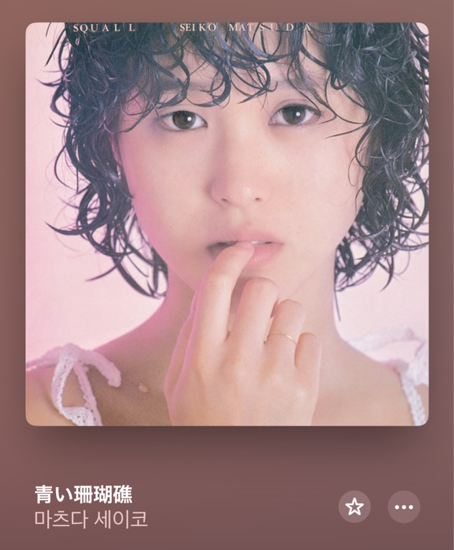

푸른 산호초

이 곡은 마츠다 세이코가 1980년 7월 1일에 발표한 두 번째 싱글로 발매 직후 오리콘 주간 차트에서 최고 2위를 기록하며 1980년 제22회 일본 레코드 대상에서 신인상을 수상하며 세이코를 단숨에 톱 아이돌의 자리에 올려놓은 동시에 이제 막 아이돌 문화가 꽃피우기 시작한 일본 음악계의 흐름을 선도한 곡 중 하나로 자리매김했다. 이 곡은 마츠다 세이코의 첫 번째 오리지널 음반 SQUALL에도 수록되어 8월 1일 발매되었다. 곡의 분위기는 부드럽고 청량한 멜로디와 서정적인 가사가 돋보이며, 여름 해변의 풋풋한 첫사랑을 연상시키는 가사와 세이코 특유의 맑고 깨끗한 음색이 어우러져 많은 이들의 마음을 사로잡았다. 특히 "あなたが好き" ("당신을 좋아해")라는 가사는 당시 젊은이들 사이에서 큰 화제가 되었고, 이 곡의 상징적인 부분으로 자리 잡았다.